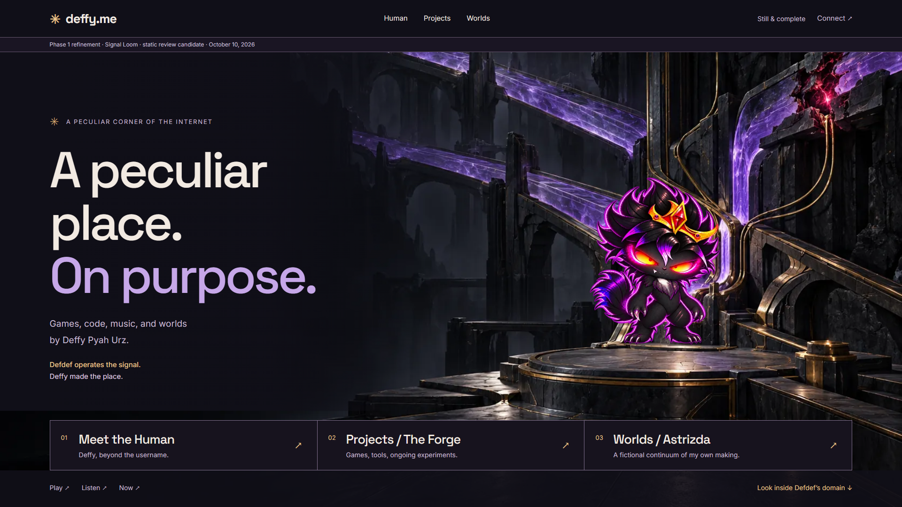
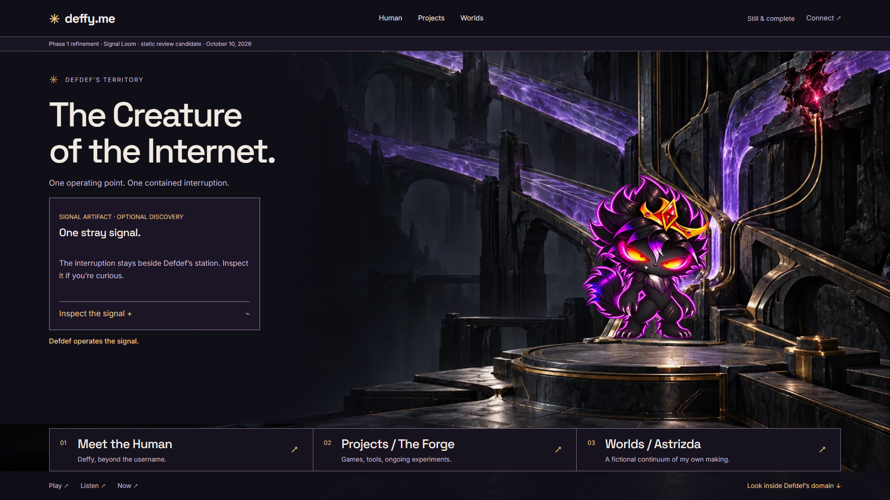
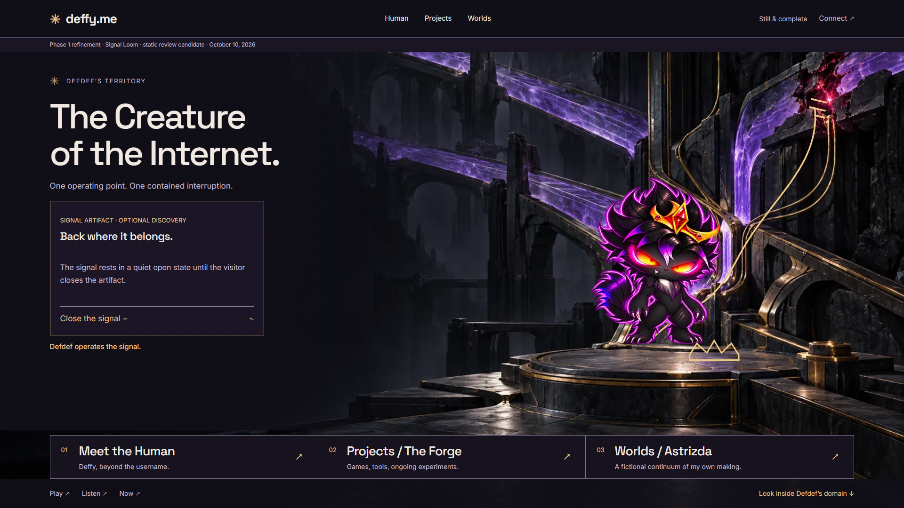
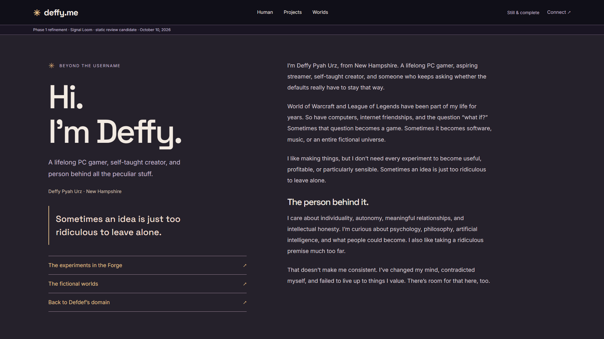
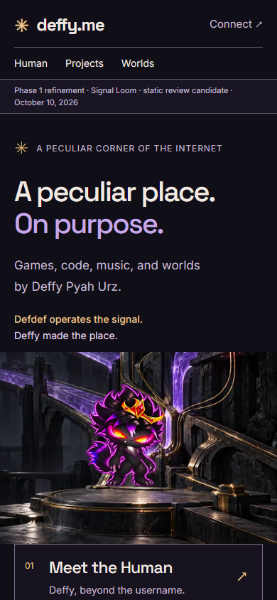
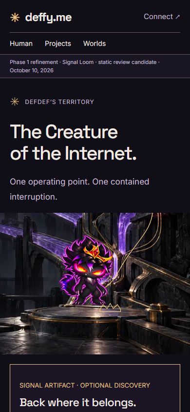
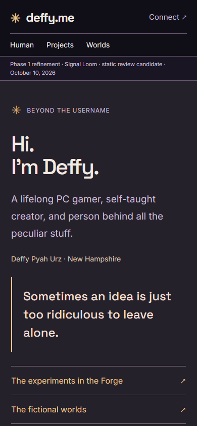
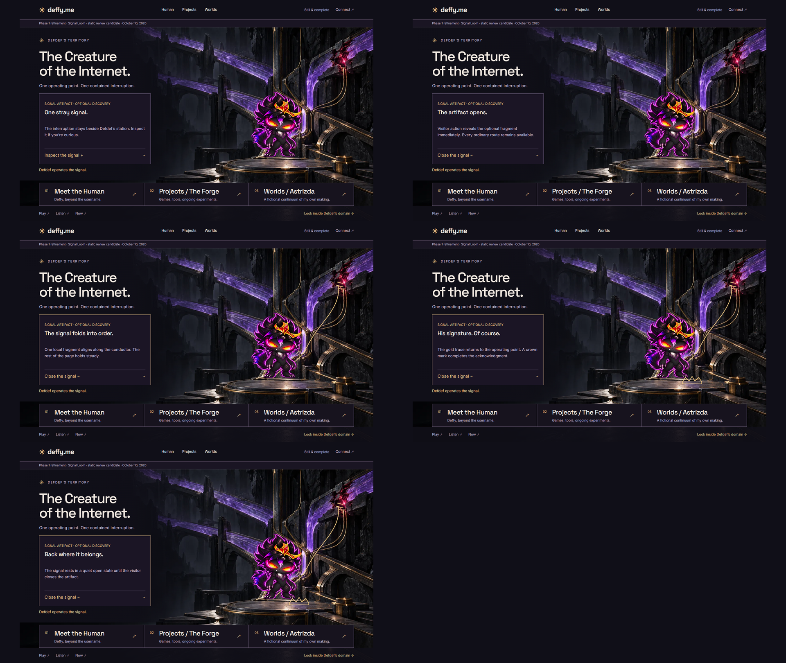

Arrival / Signal Loom
Static review candidate, not an approved runtime design.
1920×10801440×900Responsive platePre-Opus Phase 1 preparation
A separate material-rich candidate, targeted evidence audit and compact decision packet. The original Phase 1 package remains frozen. No scene changes, executable signal prototype or public asset promotion.

Static review candidate, not an approved runtime design.
1920×10801440×900Responsive plate
Static review candidate, not an approved runtime design.
1920×10801440×900Responsive plate
Static review candidate, not an approved runtime design.
1920×10801440×900Responsive plate
Static review candidate, not an approved runtime design.
1920×10801440×900Responsive plate
arrival · 390 viewport / full page
domain-settled · 390 viewport / full page
human · 390 viewport / full page
The environment is generated review art; Defdef is a separate unchanged canonical derivative. Source and exact generation prompt are retained. Concept #3 remains unavailable. Contrast/overlap evidence is separate from automated scan results.